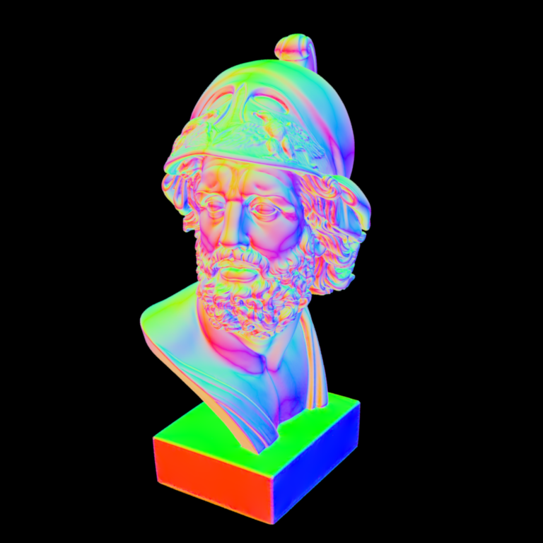
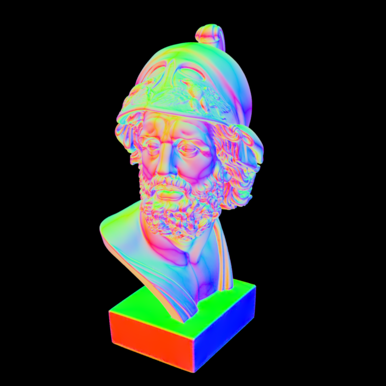
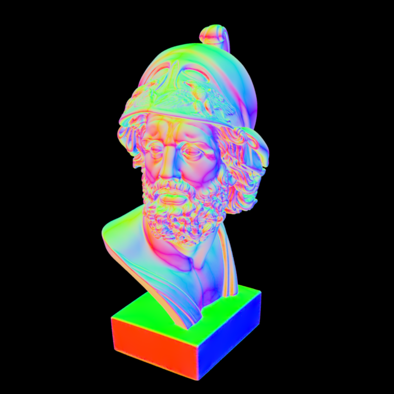

**Homework 2**
Student name: Samuel Laporte
Sciper number: 366973
Octree construction (50 pts)
============================
Q1: What is a reasonable max depth of the tree?
I think the depth of the tree really depend on the goal you want to achieve with an octree system.
For exemple if you want to do culling, then having a tree that is deep will help you by reducing the memory used for the rendering
In my case, I want to optimise the time it take to render so a reasonable depth is around 8 which is more than enough since it gives you
around 8^8 leaves.
Q2: What information do you store per octree node?
Each node need to have their own bounding box in order to check if a ray collide in their area.
I also store the children pointer. For the leaves, I also store a vector of triangles indices that are inside the bounding box.
Q3: How many bytes of memory does one of your octree nodes occupy?
According to the function sizeof(), the size of one node is 48 Bytes.
But this doesn't include the actual data size pointed by the attribute of the node.
Q4.1 Construction time with your local machine?
The computation time to build an octree have a depth of maximum 8 is around 570ms
Q4.2 Number of interior nodes?
There is 83178 middle node in my octree
Q4.3 Number of leaf nodes?
There is 396330 leaves in my octree
Q4.3 Average number of triangles per leaf node
There is an average of 2870180 / 396330 = 7,24 triangles per leaf
Ray traversal (25 pts)
======================
Q1 Explain the logic of your traversal function and justify its correctness.
The process is fearly simple. For a ray, we check if it collide with the root node's bounding box.
If it is the case we are going to check recursively every child that get hit by the until we get to a leaf.
In that case we add those triangles indices into an array that will later be use to check if the ray hit one of those triangles.
This ray traversal is effective and greatly increase the performance of the program since we can omit some calculation on volume that have 0 chances
of containing a triangle that could be hit by the ray. Therefore only a tiny part of the hundred of thousand of triangles will need computation to check if the ray
register a hit.
Q2 Measurement
For the comparison, the setup I used is as follow: 1 sampling per pixel and a resolution of 200 by 200. With the brute force method, my compute manage to render the image in
2.2 minutes. With the octree implementation and for the same scene setting, the program manage to render the image in 75ms.
Those number incure that the octree implementation is around 1760 times faster than the brute force method.
Improved ray traversal (25 pts)
===============================
Surface normal visualization of the Ajax bust:

The sorting algorithm is fearly simple. First you need to sort an array of index and not the actual array of node (that took me a very long time to figure it out). We do this to prevent some segmentation fault since there is more
than 1 thread working at the same time. In the sorting function, I just have to check the distance of the bounding box of node A and B vs the ray origin. The node that is the closest to the ray will be put before the other in the array.
This way, you get an array of indices that represent the children nodes.
Once the nodes's indices are sorted by distance, the only thing left to do is to check if the distance between the last hit triangle with the ray is less than the bounding box of the child node we are currently checking in the for loop. If not, it is
useless to compute the rest of the nodes since theres is no way that one of the triangles will be shown up on the screen because another triangle is in front of them.
For the same setup (1 sample, 200 x 200 images) the improved ray traversal take 43ms to render. Compared to the previous ray traversal, this new methods is 1.7 times faster.
Compared to the brute force method, this represent an improve in computation by 3069.
Feedback
========
We would appreciate any comments or criticism to improve the projects in future years--naturally, this part will not be graded. Examples of information that is useful to us includes:
* How much time did you spend on the assignment? How was it divided between designing, coding, and testing?
Too much. More than 8 hours
* What advice should we have given you before you started?
I think more precise instruction (where to put the code) or to explain how the engine work when you give the project to us would help a lot of student
* What was hard or surprising about the assignment?
The improvement you can make to your program by just better managing your data
* What did you like or dislike? What else would you change?
 
